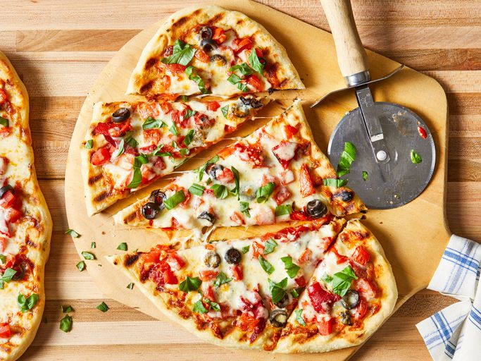

Pizza

Description
Easy to make pizza on grill that gives a classic smoky, word fired oven
flavor.
Ingredients
- Tomato sauce
- Tomatoes
- Black Olives
- Roasted red Peppers
- Mozzarella Cheese
- Fresh Basil
- (Opt.)Toppings
Steps
- Make the dough
- Make the garlic oil, then brush onto the grill grates
- Shape the dough and place it on hot grill
- Flip the crust and brush with oil
-
Top the pizza however you like, close the lid, and cook until cheese melts